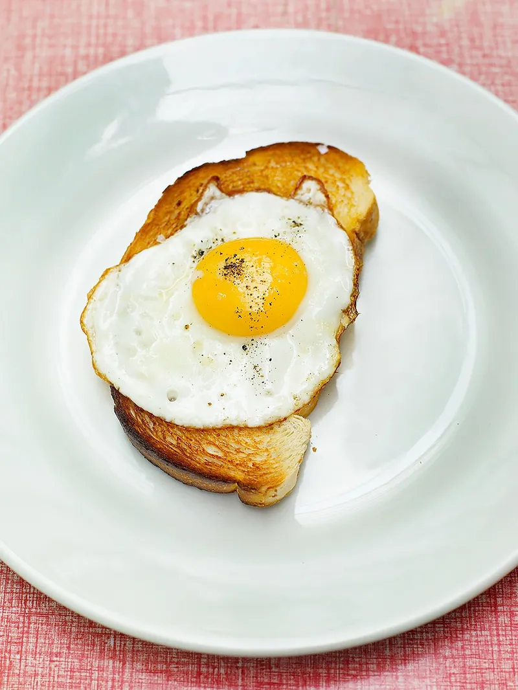

Sunny-side Up Eggs

Description
“Perfectly soft and silky fried eggs, ready to eat in just 5 minutes. ” - Jamie Oliver
Ingredients
- 1 tablespoon olive oil
- 4 eggs
- 1/16 teaspoon sea salt
- freshly ground black pepper , to taste
Steps
- Get your frying pan on a medium to low heat and add enough olive oil to lightly coat the bottom of a large nonstick pan (about 1 tablespoon).
- Crack the eggs into the pan. As the oil gets hotter you will see it start to change the color of the eggs. If the oil starts to spit it is because it is too hot, so turn the heat right down. Cook until the tops of the whites are set but the yolk is still runny.
- When they are ready, remove the pan from the heat and take the eggs out using a spatula. Place on a plate and dab them with some paper towels to soak up any excess oil. Serve on toast with a sprinkling of the sea salt and freshly ground black pepper.
- Delicious served on some 7-grain bread.